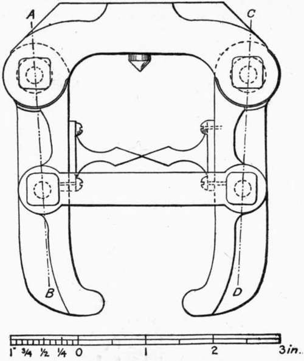
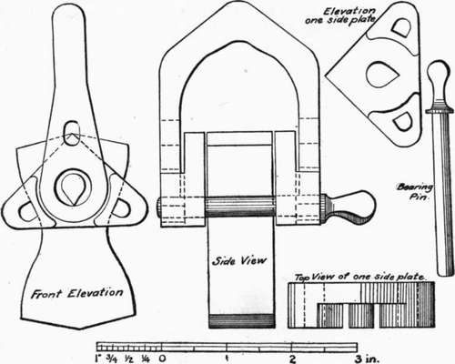

208. Strength Of Briquets That Develop Clip-Breaks
Description
This section is from the book "Cement And Concrete", by Louis Carlton Sabin. Also available from Amazon: Cement and Concrete.
208. Strength Of Briquets That Develop Clip-Breaks
It was also found in breaking 277 briquets with two styles of clips without cushions that 129 of them that gave clip-breaks averaged 611 pounds per square inch, while 148 which did not develop clip-breaks had a mean strength of 590 pounds. This result is easily accounted for by saying that some of the briquets that broke in the small section were made to do so by the cross-strain introduced by imperfect adjustment in the clips.
When a briquet breaks at other than the smallest section, it is certain that the smallest section has a greater strength per square inch than is shown by the result obtained; how much greater cannot be told. But it follows that if clip-breaks could be eliminated in a proper way, one which would not cause center breaks by the introduction of cross-strains or other undesirable conditions, the strengths thus obtained would be greater than when clip-breaks occur. The fact that the use of a rubber cushion gives lower strengths, shows that this is not the proper method of preventing clip-breaks.
1 For a report of these tests in detail, see Annual Report Chief of Engineers, U. S. A., 1895, p. 2913. Also "Municipal Engineering," Dec, 1896, Jan., Feb., 1897.
209. Mr. W. R. Cock has devised a clip, with rubber-covered gripping points, which has attracted some attention. It has sometimes been assumed that because this clip eliminated clip-breaks it must give a higher apparent strength than the rigid form. No extensive series of experiments have been published which permit of comparing this clip with other forms, but from the results obtained above, in using rubber cushions, it would appear that the Cock clip may give lower apparent strengths.
Fig. 7. RUSSELL CLIP.
210. The form of clip designed by Mr. S. Bent Russell is constructed on the "evener" principle, each clip having freedom of motion imparted by four pin-connected joints (see Fig. 7). It is sought to prevent any but an axial pull being applied to the briquet. On account of details of construction, into which it is not necessary to enter here, the clip must be in its normal position when the briquet is inserted, in order that the possibility of cross-strain shall be effectually removed. As a result of many tests with this form and the ordinary "Engineers' Standard," it was found that they gave very nearly the same strength. But that the evener motion itself was of some value was shown by a series of experiments in which part of the briquets were broken by this form of clip without modification, while part were broken by the same clip when it had been changed to a rigid form by means of a clamp that eliminated the evener motion. It is believed that with some modifications this clip will give good results, and it may be used almost as rapidly as the ordinary rigid form.
Fig. 8. SINGLE GIMBAL CLIP.
211. Several experiments were made with a clip in which the gimbal principle was applied, the stress passing from the machine to the gripping points through knife edges placed in the line joining opposite gripping points and midway between them1 (Fig. 8). Higher results were obtained with this form, the " Single Gimbal," than with any of the styles with which it was compared, but it was made only for experimental purposes, and unless modified is not convenient enough to be recommended for general use.
212. In the course of these experiments it was shown that to increase the distance between gripping points, grasping the briquet nearer the head, increased the apparent strength and diminished the number of clip-breaks. With the Russell clip, increasing this distance from 1 3/16 inches to l 7/16- inches gave an increase of about six per cent, in the apparent strength; and a similar increase in the width between jaws of the Gimbal clip, from 1 3/16 to 1 6/16 inches, gave an increase in apparent strength of about five per cent. It was found later that Mr. J. Son-dericker had previously arrived at similar results,2 and as the form of briquet used by the latter had permitted extending the experiment, he found that when the points were about 1 3/4 inches apart (making the area of the briquet about 1 3/4 square inches between opposite gripping points), nearly all the fractures occurred at the smallest section.
Continue to: